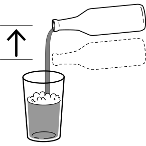
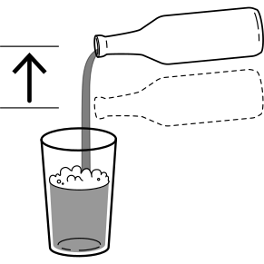
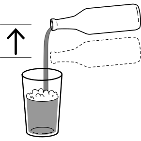

cartola
blanche/whitbier
IBU 15
4,0%
33cl
acqua, malto d'orzo, fiocchi di frumento, zucchero, scorza di limone, luppolo, menta, coriandolo, lievito
Descrizione
Una blanche molto rinfrescante dalle spiccate note di menta e limone che ricordano il cocktail mojito. Super beverina e dissetante.
Come servirla
Versare con il bicchiere a 45 gradi fino a due terzi alzando poi la bottiglia per la parte finale in modo da formare una schiuma perfetta.

Quale bicchiere usare
Come conservarla
Tenere in un luogo fresco inferiore a 10°C e al riparo dal sole.
Come e' nata
Il mio scopo e' stato quello di ricreare in versione birrosa il mojito mantenendo la freschezza e la bevibilita' del cocktail.

 
